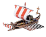
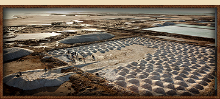
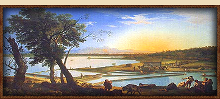

RTR: Imperium Surrectum
RTR: Imperium SurrectumSaltworks (Industry) chain
3 levels, each replacing the one before it — you upgrade in place rather than building alongside.
Saltworks (Industry) → Salt Refiner (Industry) → Salt Exports (Industry)
Pictures are the game's own building art. Where a culture ships none of its own, the game falls back to another culture's, and that is what is shown here.
Levels at a glance
| Level | Cost | Build time | Minimum settlement | Upgrades to | Level | Cost | Build time | Minimum settlement | Upgrades to | ||
|---|---|---|---|---|---|---|---|---|---|---|---|
| Saltworks (Industry) | 1,600 | 3 | town | Salt Refiner (Industry) | Salt Refiner (Industry) | 4,000 | 5 | large town | Salt Exports (Industry) | ||
 | Salt Exports (Industry) | 14,400 | 8 | city | — |
Costs in denarii, build time in turns.
Salt Refiner (Industry)

A significant salt extraction center has been established, supplying the region and beyond.
More salt, more life! Our prosperity depends on these precious crystals.
Salt production has expanded, and the once-modest site has grown, attracting traders and merchants from afar.
Salt is no longer just a local commodity; it’s an exportable treasure, as prized for preserving food as for ensuring the soldiers’ loyalty.
The salt from here keeps armies marching and merchants bartering, its gleam in the sunlight almost as brilliant as gold. Salt might not build temples, but it’s what keeps the granaries filled and the soldiers fed.
For every grain sold, a small fortune comes home.
| Cost | 4,000 denarii | Build time | 5 turns | Minimum settlement | large town | Upgrades to | Salt Exports (Industry) |
What it does
- +2 trade income
- +1 population growth
- -1 public order (happiness) (player only)
Show 3 effects that apply only in the circumstances shown
- +4 taxable income — only when
not slave_trade_building_supply - +8 taxable income — only when
slave_trade_building_supply - -1 public order (happiness) — only when
not is_player and building_present_min_level salt_production salt_2
Saltworks (Industry)

A modest salt extraction site has begun operations, keeping life a little less tasteless.
Without salt, by Hercules, one cannot have a civilized life - Well, Pliny the Elder wasn’t wrong about that...
A modest saltworks has been established, providing the region with this precious mineral that elevates meals from bland to divine.
Salt may not be gold, but its value is in every kitchen and at every table. The workers here sweat and toil, gathering the salt that will preserve meats, season meals, and keep life a bit more flavorful. While temples may rise to the gods, it’s salt that ensures the gods’ offerings don’t spoil.
Gold may shine, but salt preserves food and life. For without salt, what is civilization but a barren table?
| Cost | 1,600 denarii | Build time | 3 turns | Minimum settlement | town | Upgrades to | Salt Refiner (Industry) |
What it does
- +1 trade income
Show 2 effects that apply only in the circumstances shown
- +2 taxable income — only when
not slave_trade_building_supply - +5 taxable income — only when
slave_trade_building_supply
Salt Exports (Industry)

Salt is now being exported on a large scale, enriching the region and beyond.
Gold may shine, but salt preserves.
The salt industry in this region has become a massive operation, exporting vast quantities of this highly valued resource.
Fields of salt gleam under the sun, filling amphorae bound for distant markets and ensuring that the land’s wealth sparkles in every corner of the empire. Salt from here is more than a preservative; it is prosperity itself. Whether it’s seasoning a feast or preserving food for winter, salt from this region fortifies both the body and the treasury, proving that the smallest mineral can be the bedrock of a nation.
| Cost | 14,400 denarii | Build time | 8 turns | Minimum settlement | city |
What it does
- +3 trade income
- +1 population growth
- -2 public order (happiness) (player only)
Show 3 effects that apply only in the circumstances shown
- +6 taxable income — only when
not slave_trade_building_supply - +10 taxable income — only when
slave_trade_building_supply - -2 public order (happiness) — only when
not is_player and building_present_min_level salt_production salt_supply
What the shorthands in those conditions stand for (1)
These are the mod's own, quoted from the game files unchanged.
| Shorthand | Stands for | ||||||
|---|---|---|---|---|---|---|---|
slave_trade_building_supply | resource slave_trade or hidden_resource slave_supply_built factionwide |